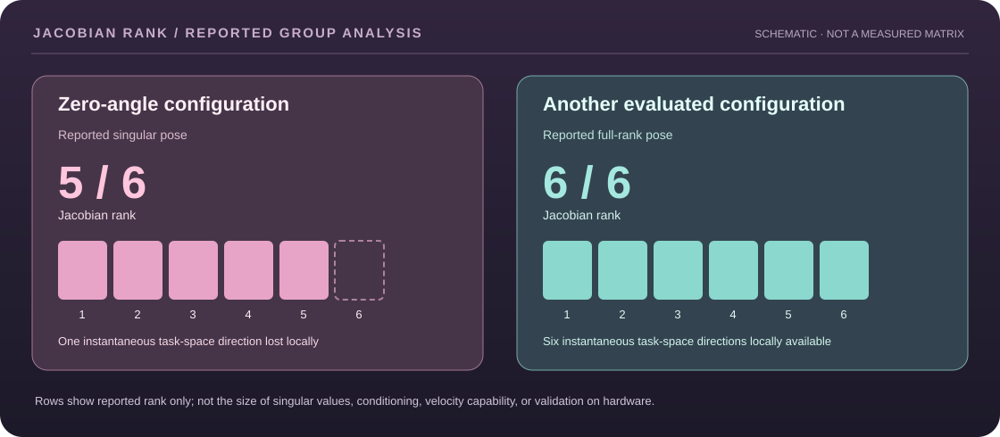

Engineering details
Challenge
Represent the pose and end-effector velocity of a six-revolute-joint robot and identify singular configurations.
Approach
Develop a six-link DH table, multiply homogeneous transformations, derive the Jacobian, and evaluate its rank with MATLAB. The analyzed zero-angle configuration produced rank 5, indicating a singularity.
Tools
MATLAB, Denavit–Hartenberg convention, forward kinematics, Jacobians, velocity analysis.
KINEMATICS / SINGULARITY REASONING
What the reported Jacobian rank means
The six-revolute-joint manipulator is modeled as a series of rigid transforms. A geometric Jacobian maps joint rates into instantaneous end-effector translation and angular velocity. Reduced matrix rank means one or more instantaneous task-space directions cannot be generated independently at that configuration.

Forward kinematicsT₀⁶(q) = A₁(q₁) A₂(q₂) ⋯ A₆(q₆)
Instantaneous differential kinematics[v; ω] = J(q) q̇
Geometric Jacobian, revolute joint iJᵥ,ᵢ = zᵢ₋₁ × (o₆ − oᵢ₋₁); Jω,ᵢ = zᵢ₋₁
Evaluation sequence
- Assign six consistent Denavit–Hartenberg coordinate frames and link transforms.
- Form the tool pose by multiplying homogeneous transforms.
- Assemble the six-column geometric Jacobian from joint axes and origins.
- Evaluate rank at selected joint vectors in MATLAB and compare singular with nonsingular cases.
What would make this reproducible?
- The original DH parameter table, exact frame convention and tool offset.
- Exact joint vectors for every evaluated pose, not simply a pose label.
- The evaluated Jacobian entries, numerical rank tolerance, and MATLAB implementation.
- Hardware or independent numerical comparisons if claiming physical-robot accuracy.
Evidence boundary: These are standard mathematical relationships and a visual explanation of the group's reported ranks. The source records do not preserve the complete numeric matrices or original code in this public case study. No new numerical rank calculation or hardware result is claimed.
Documented outcome
The group reported Jacobian rank 5 at the analyzed zero-angle configuration and full rank 6 at another evaluated configuration. The distinction identifies a locally singular pose in the mathematical model; it does not establish independent UR3e hardware accuracy, numerical conditioning, or general safety margins.